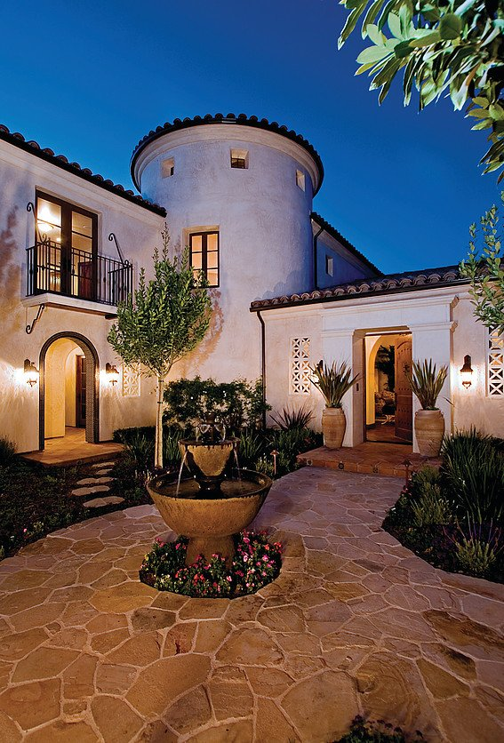
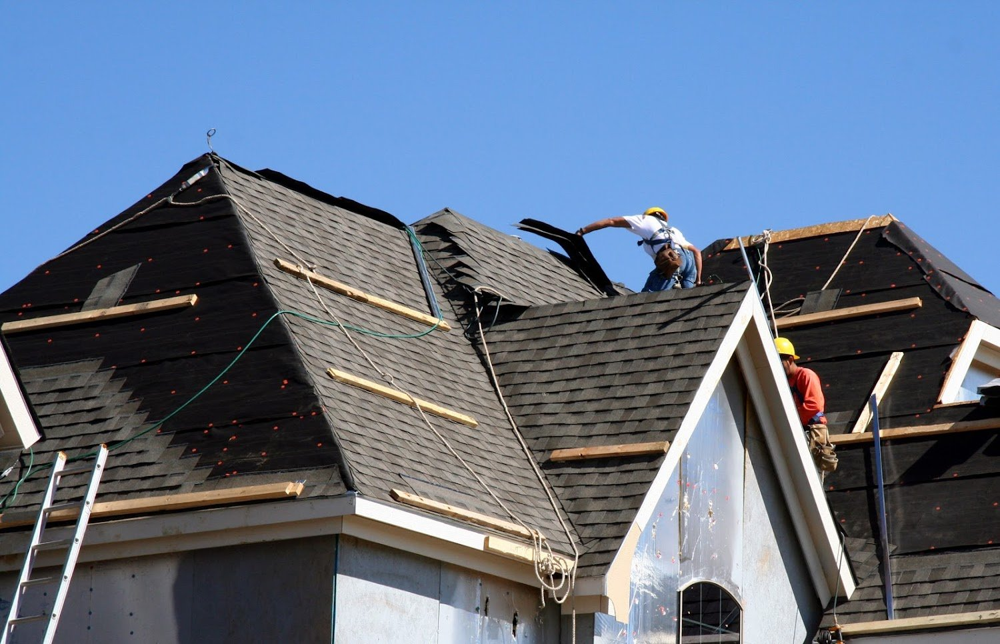
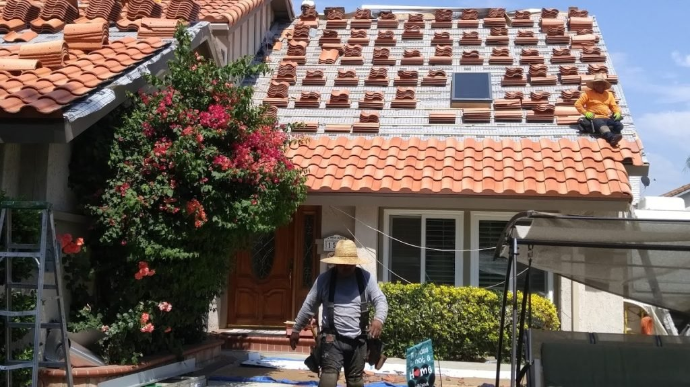
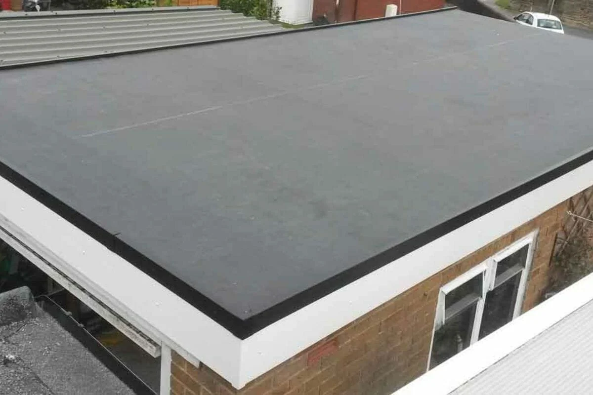

ADUs and additions
Planning and build support for property owners who need more space.
From ADUs to roofing, the site now explains the work they already offer.
A construction and roofing company serving the Inland Empire with services that span new builds, remodeling, and roofs.
Photo highlights
Pulled from the business's public web presence so the homepage feels more like the company itself.



A straightforward menu of work the business already appears to offer publicly, organized so people can understand it at a glance.
Planning and build support for property owners who need more space.
Flat, shingle, tile, and metal roof work with clear estimate paths.
Interior upgrades and broader renovation projects.
A concise gallery that shows finished work by service type.
Real photos from the public site gallery, including roofing and construction work.



Built around the city listed in public directories and the surrounding nearby cities that make sense for this business.
This draft can grow into separate landing pages for the most important jobs or customer types.
Make it easy to call or request an estimate in one tap.
Separate the highest-value jobs into dedicated pages for better clarity and SEO.
Add real project photos, review snippets, and trust signals as they become available.
Keep the site focused on Jurupa Valley and nearby cities so it feels local fast.
Call (909) 845-3588 or use a simple form to request help. The next version of this site can also link to photos, reviews, and service-specific pages.